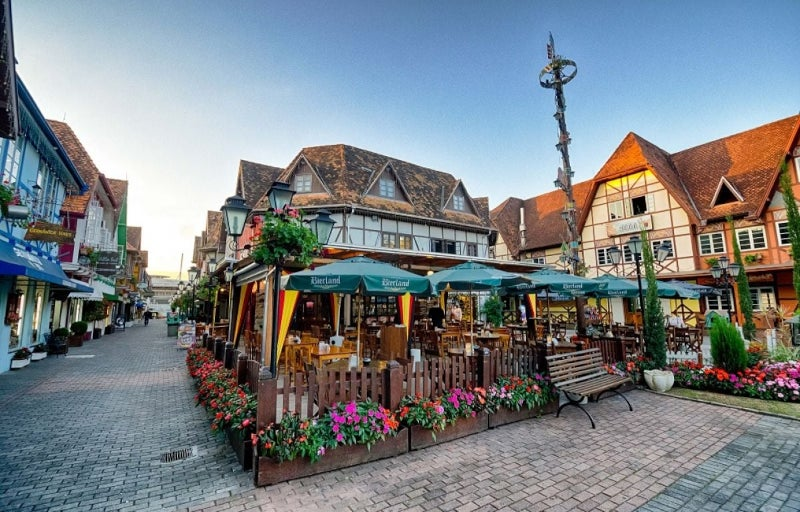

Orla de Fortaleza
A vocação de ser referência nacional em diversos setores artísticos, faz da capital cearense o destino ideal para muita festa, recheado de história e, sem dúvida, tem muito o que fazer em Fortaleza entre suas paisagens incríveis do famoso litoral nordestino. O encontro do Rio Mundaú com o mar deixa tudo ainda mais lindo, principalmente se for admirado do “mirante das dunas”.

OktoberFest em Blumenau
Localizada no belíssimo Vale do Itajaí, o charme da herança cultural dos colonizadores europeus está por todos os lados. Além de ser reconhecida internacionalmente pela maior festa alemã das Américas – a Oktoberfest, Blumenau recebe seus visitantes com um clima todo especial e uma culinária de lamber os beiços.
Cidade de Olinda
A árvore-símbolo da cidade é a marca registrada das paisagens da região colocando seus coqueiros como pano de fundo para qualquer foto do álbum de viagem. Entre as ladeiras (consideradas Patrimônio Cultural Mundial) e o fundo do mar, fique com os dois. Conhecida como a “Capital Brasileira dos Naufrágios”, a vida marinha de Olinda é indiscutivelmente imperdível.

Cidade de Ouro Preto
Dentro da enorme diversidade do patrimônio cultural brasileiro, Ouro Preto é motivo de destaque. Não será difícil se encantar com os conjuntos urbanísticos e arquitetônicos do século XVIII, seus núcleos históricos e um clima de sedução em meio as capelas, museus e chafarizes ladeados pelas ladeiras de paralelepípedo que recortam toda a antiga Vila Rica.
Cidade de Salvador
A começar pelas misturas culturais, seja do simpático povo soteropolitano ou da música animada, passando pelas histórias contadas em seus casarios coloniais, além da culinária com fortes raízes africanas, pode já ir se preparando para fazer as reservas em um dos hotéis baratos em Salvador. A brincadeira fica ainda mais divertida quando o assunto são os mais de 50 quilômetros de praias.
Orla de Florianópolis
A beleza da ilha é indiscutível. Para os amantes de esportes radicais a costa leste é um prato cheio. Mesmo se não for curtir um voo de asa delta ou as ondas da Praia Mole, as trilhas e a paisagem intacta de Florianópolis se tornam um baita programa. Entre os passeios em meio a natureza, destaque para o roteiro de barco à Costa da Lagoa com direito a cachoeira ou uma visita a Lagoa do Peri, a maior lagoa de água doce potável da costa catarinense.
Cidade de gramado
O contraste cultural das origens europeias com a referência dos costumes dos gaúchos é uma particularidade mais do que exclusiva, inclusive facilmente notado em qualquer hotel em Gramado. No coração da Serra Gaúcha, além dos cenários encantadores e um povo hospitaleiro, o clima diferenciado é um dos motivos que leva tanta gente a conhecer a região, principalmente quando as temperaturas caem. Uma ótima opção é o Snowland.
Orla de maceió
Seja pelos tons de azul e verde das águas do mar, pelas areias brancas e finas ou pela magia das paisagens formadas pelos infinitos coqueirais, os encantos de Maceió estão por todos os lados. Com praias ainda primitivas, as piscinas naturais formadas na maré baixa completam ainda mais o conceito de paraíso.

Cristo redentor no Rio de Janeiro
Já levando na bagagem o famoso título de “Cidade Maravilhosa”, não há como passar despercebido por tantos cenários deslumbrantes, a começar pela tradição de muitos hotéis no Rio. Reverenciada em canções e intimamente ligada com seu orgulhoso povo carioca, a cidade respira beleza e seus cartões postais são honrados em todo o mundo. Nas próximas férias no Rio de Janeiro, lembre-se de conhecer a “quase secreta” Praia do Joá (Joatinga), escondida entre São Conrado e a Barra da Tijuca.
Viagem de trem em Morretes
As rotas de aventura se perdem entre a harmonia das montanhas, bosques, cachoeiras e recantos ainda pouco explorados. A pacata cidade do litoral paranaense é um colírio para os olhos e um prazer para a alma. Encarar a subida do imponente Pico do Marumbi ou apenas admirar a imensidão do Rio Nhundiaquara são apenas algumas boas ideias para curtir a bela Morretes.